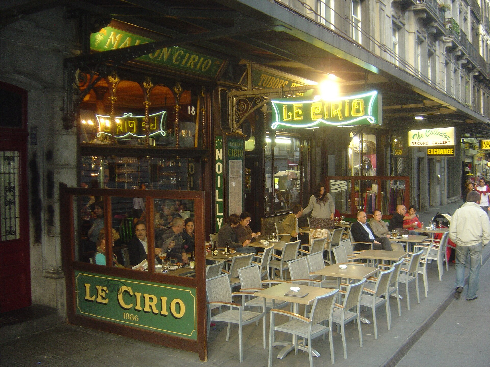

01 · Rue de la Bourse
Le Cirio
Opened in 1886 by Francesco Cirio as a shop and wine-tasting salon at Rue de la Bourse 18–20, opposite the old Bourse. It is a Belle Époque Brussels brasserie rather than a specialist beer cellar: mirrors, wood, and the long-running house drink known as a half-en-half. A natural first stop if you walk from Bourse / De Brouckère toward the Grand-Place.
Tip: Steps from the former Bourse building and a short walk from the Grand-Place. Check lecirio.be for current hours before you go; we did not lock a timetable on 23 November 2026.
Directions: Google Maps · Apple Maps
Photo: DIMSFIKAS, CC BY-SA 3.0, via Wikimedia Commons
Sources: Le Cirio (official) · Brussels-Capital Region classification decree (PDF)
See Le Cirio on our Unique Pubs deck →
Find a stay near Le Cirio →